Gestione Profili
Il portale delle Smart Guide è uno spazio digitale che raccoglie risorse pratiche e aggiornate in un unico ambiente intuitivo. Strumenti chiari e organizzati per organizzarti e trovare subito ciò che ti serve.
01.
Creazione Profilo
Una panoramica sul flusso di creazione di un profilo.
Punto di accesso
La voce di menù
Dalla dashboard, è possibile accedere alle principali sezioni tramite le voci di menu.
Menu a tendina
Cliccando sulla voce "Configurazioni" viene visualizzato un menu a tendina, da cui è possibile accedere a "Gestione Profili".
Creazione nuovo profilo
Dopo aver effettuato l'accesso alla pagina "Configurazione Profili", cliccare sul pulsante "Nuovo Profilo" per avviare il flusso di creazione.
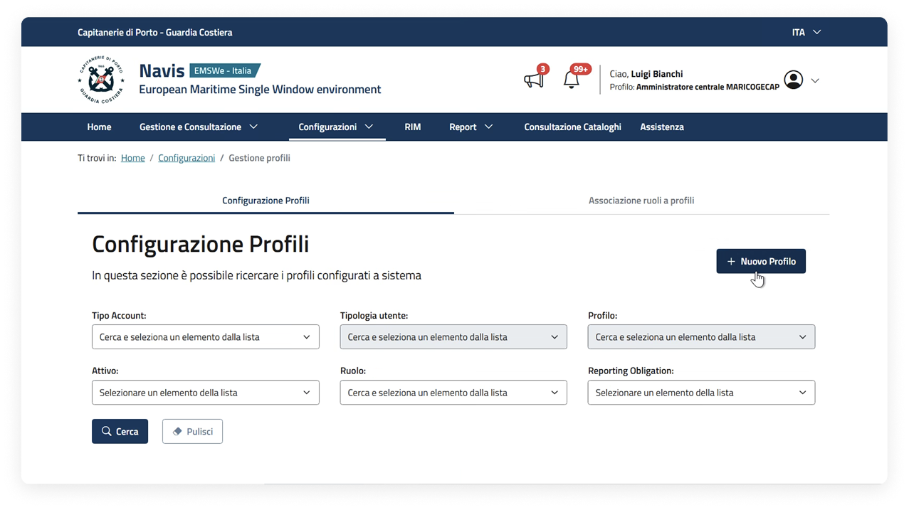
Passaggi per creare un nuovo profilo
Dopo aver cliccato il pulsante "Nuovo profilo", segui tutti i passaggi indicati a sistema e inserisci le informazioni necessarie per completare la creazione del nuovo profilo.
Inserimento delle informazioni
Inserire i dati del profilo come Tipologia Utente, Codice Profilo e Descrizione. Infine indicare se il ruolo sarà attivo.
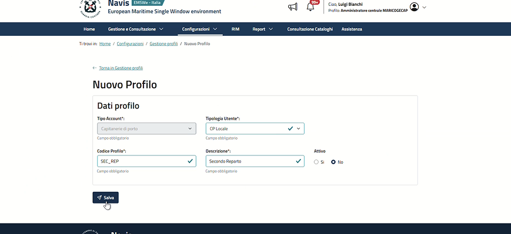
Salvataggio e conferma
Dopo aver cliccato il pulsante "Salva", il sistema mostra una finestra di conferma, chiedendo all'utente se è sicuro di confermare la creazione del profilo. Cliccare "Conferma" per creare il profilo. All'interno del dettaglio saranno disponibili i pulsanti di Modifica e Elimina. Per associare i ruoli al profilo cliccare il pulsante "Modifica".
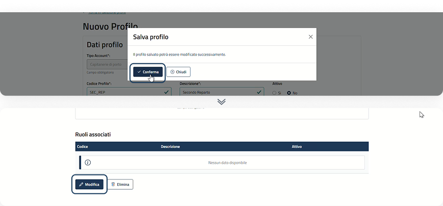
È possibile creare esclusivamente nuovi profili per il tipo account "Capitanerie di Porto".
Passaggi per associare ruoli al profilo
Dopo aver creato il profilo procedi con l'associazione dei ruoli ai profili, seguendo i passaggi indicati:
Associazione ruoli a profili
Dopo il salvataggio, per aggiungere uno o più ruoli al profilo cliccare il pulsante "Associazione ruoli a profili".
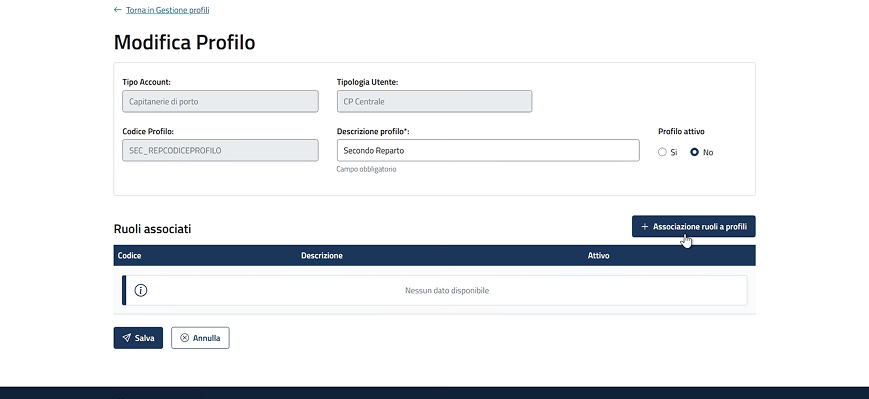
Selezione ruoli
Il sistema mostra una finestra tramite la quale è possibile selezionare uno o più ruoli da associare al profilo. Dopo la selezione degli stessi, cliccare il pulsante "Salva" per confermare l'associazione.
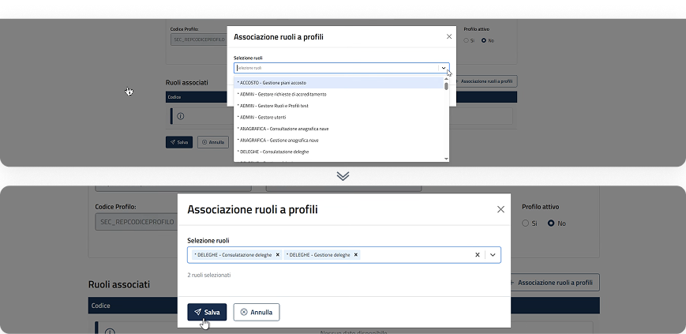
Azioni sulle componenti tecniche
I ruoli saranno visualizzati all'interno del relativo elenco e sarà possibile disassociarli deselezionandoli tramite checkbox, eliminarli attraverso l'icona del cestino e associare Obblighi di Dichiarazione tramite l'icona "+".
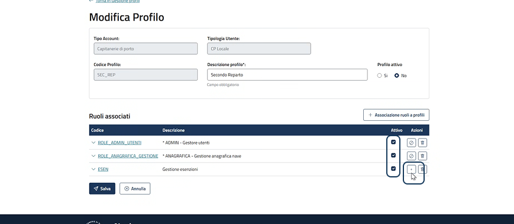
Aggiunta Obblighi di Dichiarazione al ruolo
Dopo aver cliccato il pulsante con l'icona "+", il sistema mostra una finestra tramite la quale è possibile selezionare uno o più Obblighi di Dichiarazione da associare. Dopo la selezione degli stessi, cliccare il pulsante "Salva" per confermare l'associazione.
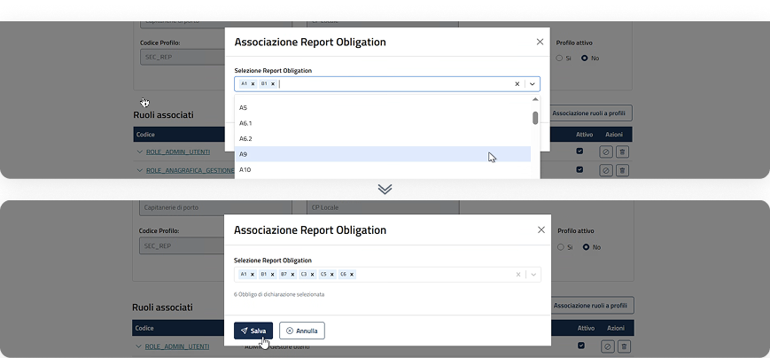
Azioni sugli Obblighi di Dichiarazione
Gli Obblighi di Dichiarazione saranno visualizzati all'interno del relativo elenco e sarà possibile eliminarli tramite il pulsante con l'"icona del cestino".
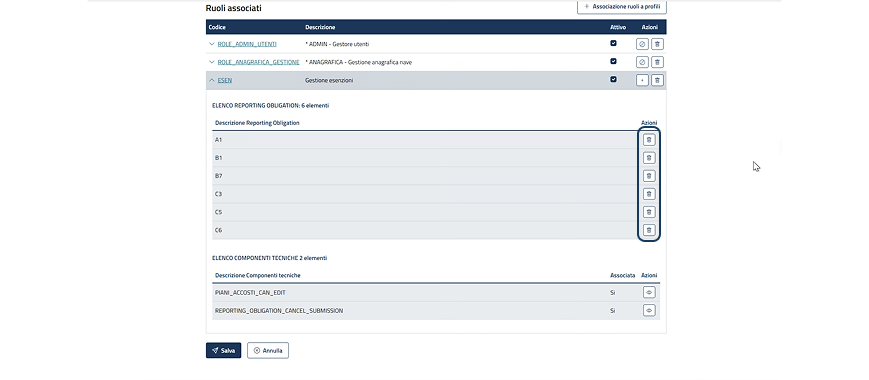
Obblighi di Dichiarazione non associabili
Cliccando sul pulsante con l'"icona del divieto", il sistema mostra una finestra che comunica all'utente che gli Obblighi di Dichiarazione non sono associabili al ruolo selezionato.
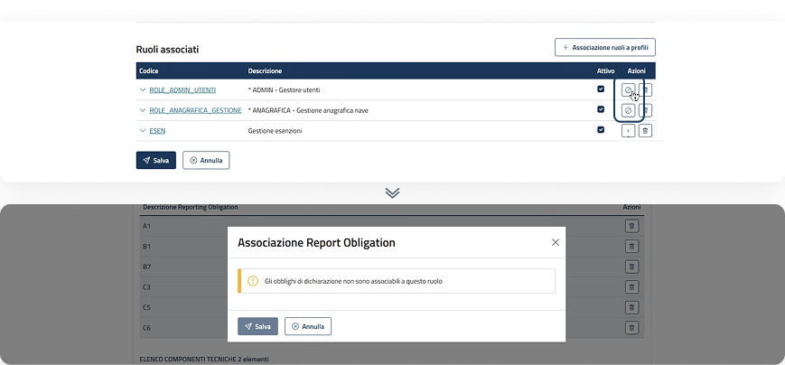
Sarà possibile associare gli Obblighi di Dichiarazione a un ruolo esclusivamente se, quel ruolo, è stato abilitato a gestire gli Obblighi di Dichiarazione.
Salvataggio
Per proseguire con il salvataggio della creazione del profilo cliccare il pulsante "Salva".
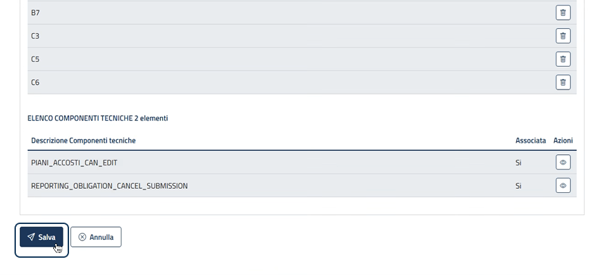
Conferma creazione profilo
Dopo aver cliccato il pulsante "Salva", il sistema mostra una finestra di conferma della creazione del profilo, cliccare "Conferma" per procedere.
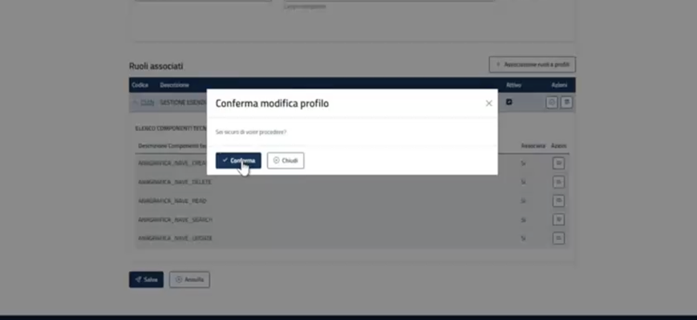
02.
Modifica Profilo
Una panoramica sul flusso di modifica dei profili.
Punto di Accesso alla modifica di un profilo
Attivazione "Modifica" dall'elenco risultati di ricerca
Nell'elenco risultati dei profili è possibile accedere al dettaglio in modalità modifica cliccando sull'"icona della matita".
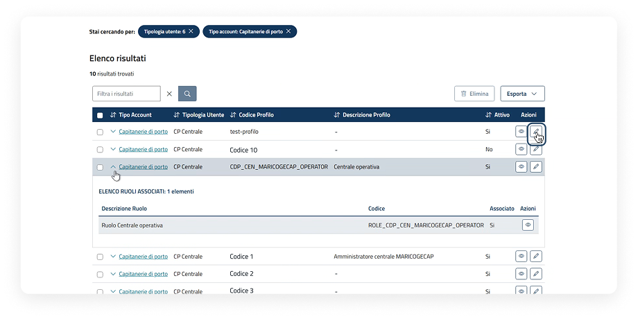
Attivazione Modifica da pagina di dettaglio del Profilo
Nell'elenco risultati dei profili è possibile accedere al dettaglio in modalità visualizzazione cliccando sull'"icona dell'occhio". All'interno del dettaglio, per procedere con la modifica sarà necessario cliccare sul pulsante "Modifica".
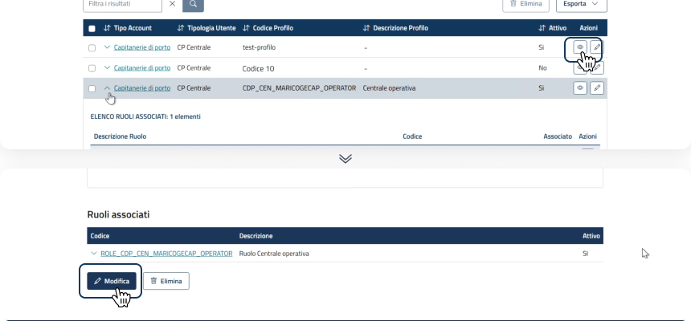
Passaggi per modificare un profilo
Dopo aver creato il profilo procedi con la modifica, seguendo i passaggi indicati:
Modifica informazioni
Tipo Account, Tipologia Utente e codice Profilo non sono modificabili. Eventualmente procedere con l'aggiornamento delle informazioni, come descrizione profilo e ruolo attivo (Sì/No).
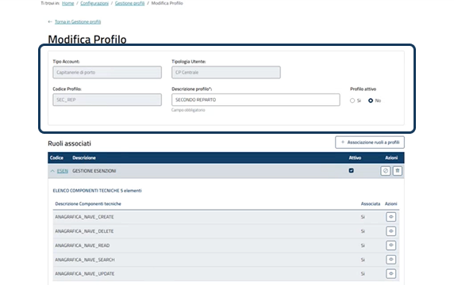
Azioni disponibili sui ruoli associati
L'utente ha la possibilità di associare ruoli a profili attraverso l'apposito pulsante, attivare il ruolo tramite selezione della checkbox ed eliminarlo attraverso il pulsante con l'"icona del cestino".
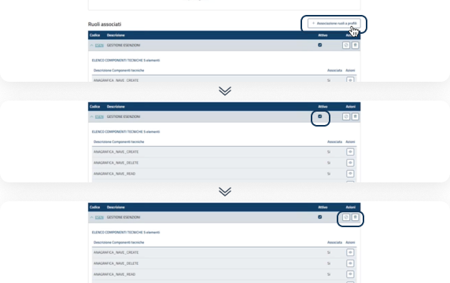
Salvataggio del profilo
Cliccare il pulsante "Salva" per salvare il profilo, successivamente il sistema mostra una finestra di conferma della modifica. Cliccare il pulsante "Conferma" per proseguire.
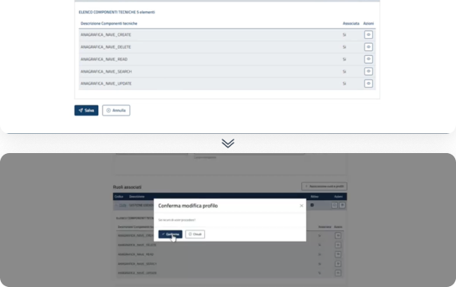
Durante l'associazione dei ruoli ai profili, all'interno dell'elenco non saranno visibili i ruoli che risultano già associati al profilo.
03.
Cancellazione profilo
Una panoramica sul flusso di cancellazione di un profilo.
Passaggi per cancellare un profilo da tabella
Dopo aver creato un profilo, l'utente può eliminarlo tramite i seguenti passaggi:
Cancellazione tramite risultati di ricerca
Nell'elenco risultati della ricerca dei profili è possibile eliminare il profilo selezionando uno o più profili attraverso la checkbox e successivamente cliccando il pulsante "Elimina".
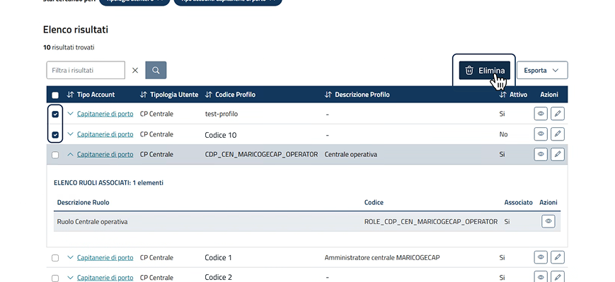
Finestra di conferma eliminazione e successo
Il sistema mostra una finestra in cui l'utente deve confermare di essere sicuro di voler eliminare l'operazione. Cliccare "Elimina Profilo" per confermare. Una volta eliminata, non sarà più possibile recuperarla.
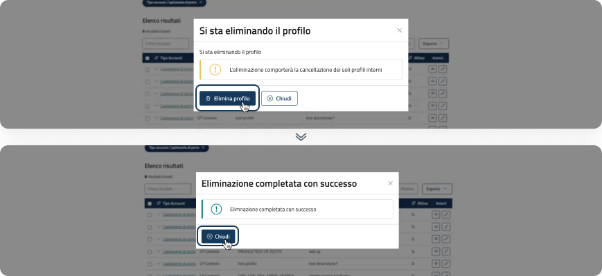
L'eliminazione comporterà la cancellazione dei soli profili interni.
Passaggi per cancellare un profilo da dettaglio
Dopo aver creato un profilo, l'utente può eliminarlo tramite i seguenti passaggi:
Cancellazione tramite azione nel dettaglio del profilo
Nell'elenco risultati della ricerca dei profili è possibile accedere al dettaglio cliccando l'icona dell'occhio. Una volta all'interno del dettaglio, per eliminare il profilo cliccare il pulsante "Elimina".
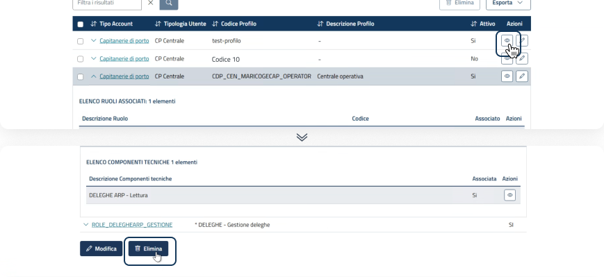
Finestra di conferma eliminazione e successo
Il sistema mostra una finestra in cui l'utente deve confermare di essere sicuro di voler eliminare l'operazione. Cliccare "Elimina Profilo" per confermare. Una volta eliminata, non sarà più possibile recuperarla.
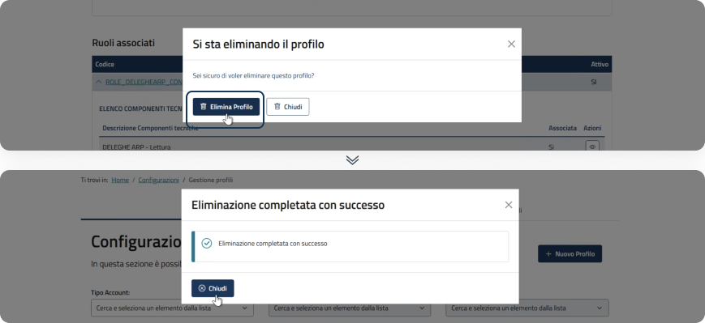
L'eliminazione comporterà la cancellazione dei soli profili interni.
04.
Associazione ruoli a profili
Una panoramica sull'associazione dei ruoli a profili.
Punto di Accesso
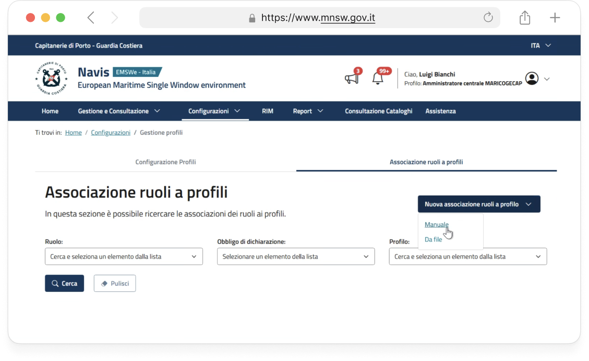
Dopo aver effettuato l'accesso alla pagina "Associazione ruoli a profili", cliccare sul pulsante "Nuova associazione ruoli a profilo" per avviare il flusso di creazione.
Il sistema darà la possibilità di creare una nuova associazione in maniera manuale o caricando un file.
Passaggi per associare "Manualmente" ruoli e profili
Dopo aver cliccato il pulsante "Associa ruoli a profilo", segui tutti i passaggi indicati:
Ricerca e selezione del profilo
Selezionare il profilo dal menu a tendina.
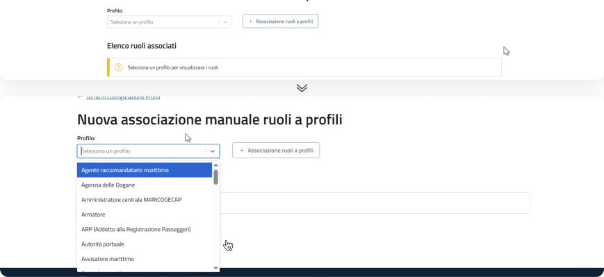
Ruolo aggiunto e azioni disponibili
Dopo aver selezionato il profilo, il sistema attiva il pulsante "Associa ruoli a Profili". Per avviare il processo di associazione cliccare il pulsante.
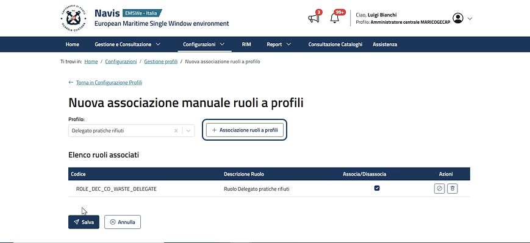
Nel caso in cui al profilo non risultino associati ruoli, il sistema mostra un'informativa.
Passaggi per associare "Da file" ruoli e profili
Dopo aver cliccato il pulsante con la tipologia "Da File", segui tutti i passaggi indicati:
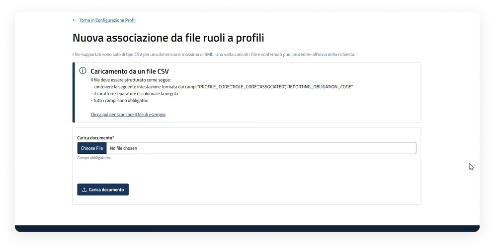
Nel caricamento tramite file, il sistema fornisce le indicazioni sulla struttura che il documento deve rispettare e mette a disposizione un file di esempio scaricabile.
Caricamento da un file CSV
Il file deve essere strutturato come segue:
- contenere la seguente intestazione formata dai campi "PROFILE_CODE", "ROLE_CODE", "ASSOCIATED", "REPORTING_OBLIGATION_CODE";
- il carattere separatore di colonna è la virgola;
- tutti i campi sono obbligatori.
Infine, per caricare il documento, cliccare l'apposito pulsante "Carica documento".
Nel caso in cui ci siano errori nei dati del file caricato, il sistema informa l'utente tramite testi informativi e messaggi di alert, impedendo il proseguimento dell'operazione. Di seguito un esempio:
Importazione da file avvenuta con errori
Importazione avvenuta con errori. Righe totali: 2, elaborate: 0
La riga 1 non è formalmente valida. Errore valore "RL001" nella colonna 1 non è ammesso.
05.
Modifica associazione ruoli e profili
Una panoramica sulla modifica dell'associazione ruoli e profili.
Punto di Accesso alla modifica associazione di ruolo e profili
Attivazione "Modifica" dall'elenco risultati di ricerca
Nell'elenco dei risultati di ricerca è possibile accedere al dettaglio in modalità modifica cliccando sull'"icona della matita".
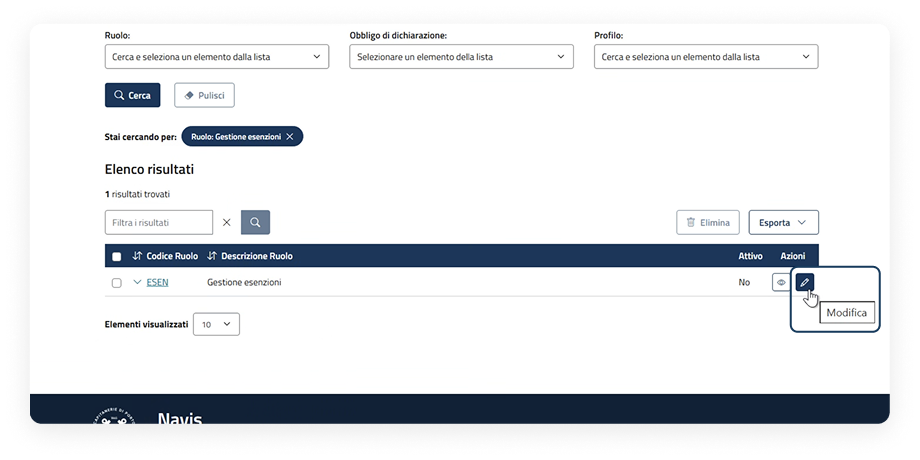
Attivazione Modifica da pagina di dettaglio associazione ruoli e profili
Nell'elenco risultati di ricerca è possibile accedere al dettaglio in modalità visualizzazione cliccando sull'"icona dell'occhio". All'interno del dettaglio, per procedere con la modifica sarà necessario cliccare sul pulsante "Modifica".
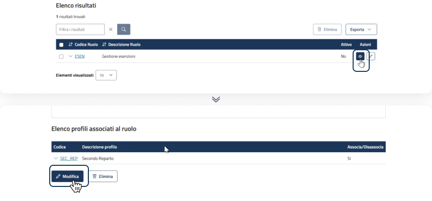
Passaggi per modificare l'associazione ruoli e profili
Dopo aver associato Profili e ruoli, l'utente può procedere con la modifica seguendo i passaggi indicati:
Aggiungi profilo
All'interno della pagina di Modifica l'utente può aggiungere nuovi profili cliccando il pulsante "Aggiungi profilo".
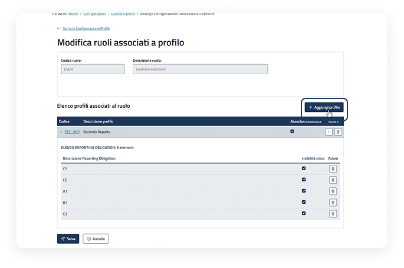
Aggiunta nuovi profili
Il sistema mostra una finestra attraverso la quale l'utente seleziona i profili da associare ai ruoli. Dopo averne selezionato uno o più, per salvare cliccare il pulsante "Salva".
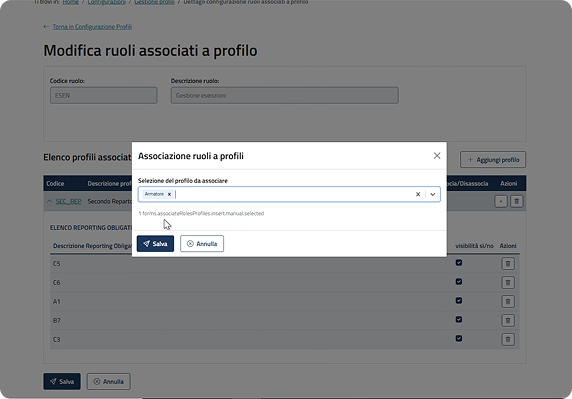
Profilo aggiunto in elenco
I profili aggiunti saranno visualizzati nell'"Elenco profili associati al ruolo". Le azioni disponibili sul profilo sono: Associa/Dissocia (checkbox), Aggiungi Obbligo di Dichiarazione (icona "+") ed Eliminazione (icona del cestino). Le azioni sull'Obbligo di Dichiarazione sono: indicazione visibilità stato (Sì/No) ed Eliminazione (icona del cestino).
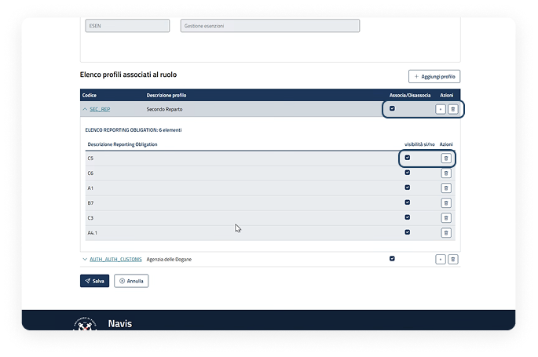
Elimina e ripristina
Dopo aver cliccato il pulsante con l'icona del cestino, il sistema sbarra il profilo eliminato. Successivamente, per ripristinarlo cliccare il pulsante con l'icona della freccia.
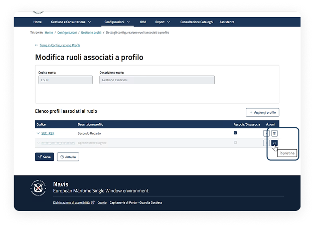
Salva modifiche
Dopo aver apportato le modifiche, salvare l'associazione cliccando il pulsante "Salva".
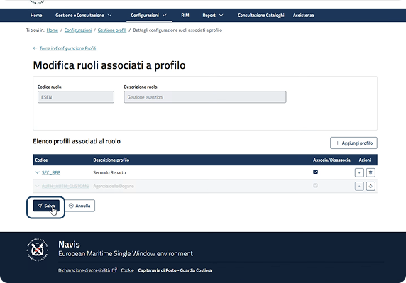
Finestra di conferma salvataggio
Il sistema mostra una finestra di conferma del salvataggio. Cliccare "Conferma" per proseguire. Il sistema mostra una finestra che informa l'utente che il salvataggio della modifica è avvenuto con successo.
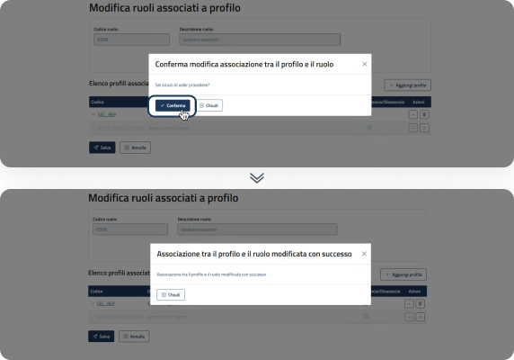
06.
Eliminazione associazione ruoli e profili
Una panoramica sull'eliminazione associazione ruoli e profili.
Punti di accesso per eliminare l'associazione ruoli e profili
Attivazione "Elimina" dall'elenco risultati di ricerca
Nell'elenco dei risultati di ricerca delle associazioni è possibile eliminarne una o più selezionandole tramite checkbox e successivamente cliccando il pulsante "Elimina".
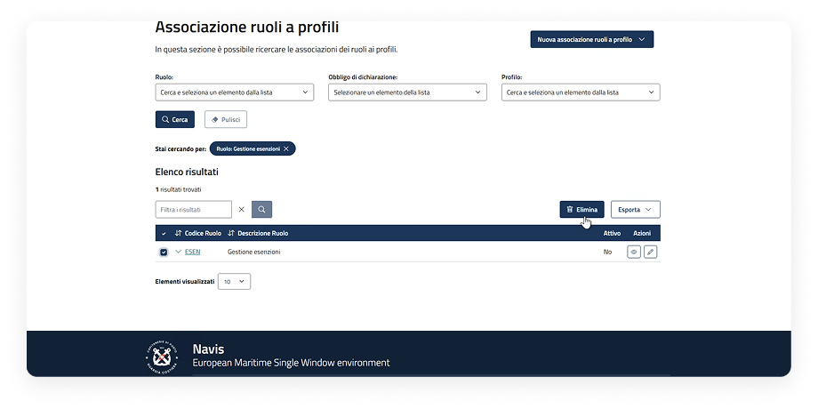
Attivazione "Elimina" da pagina di dettaglio della configurazione
Nell'elenco dei risultati di ricerca è possibile accedere al dettaglio in modalità visualizzazione cliccando sull'"icona dell'occhio". All'interno del dettaglio, per procedere con l'eliminazione sarà necessario cliccare sul pulsante "Elimina".
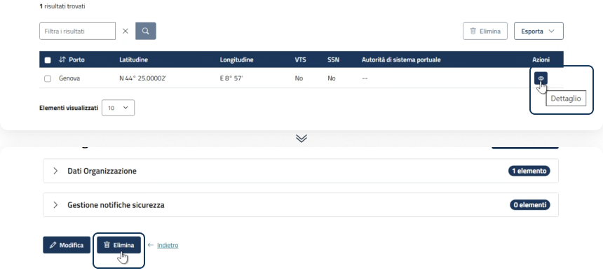
Punti di accesso per eliminare l'associazione ruoli e profili da tabella
Eliminazione in tabella
Nell'elenco risultati di ricerca è possibile eliminare uno o più ruoli e profili associati dall'elenco selezionandoli tramite checkbox e successivamente cliccando sul pulsante "Elimina".
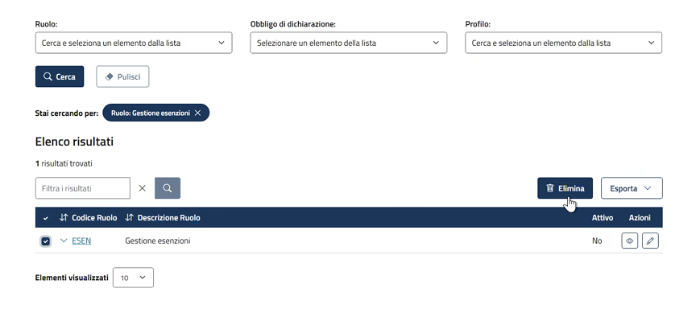
Finestra di conferma eliminazione
Dopo aver cliccato il pulsante, il sistema mostra una finestra di conferma dell'eliminazione. Cliccare il pulsante "Elimina associazione ruoli a profilo" per proseguire.
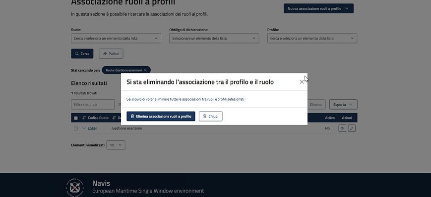
Punti di accesso per eliminare l'associazione ruoli e profili dal dettaglio
Pulsante dettaglio
Nell'elenco risultati della ricerca è possibile accedere al dettaglio cliccando il pulsante con l'"icona dell'occhio".
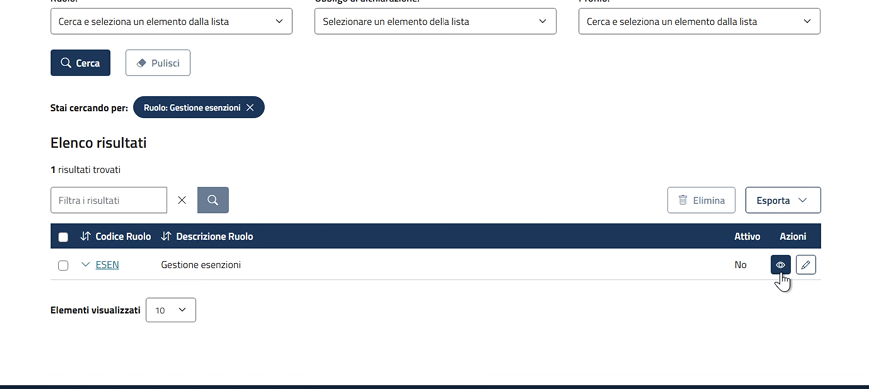
Elimina ruolo associato a profilo e finestra di conferma
All'interno del dettaglio, dopo aver cliccato il pulsante "Elimina", il sistema mostra una finestra di conferma dell'eliminazione. Cliccare il pulsante "Elimina associazione ruoli a profilo" per proseguire.
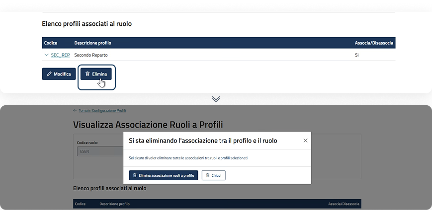
07.
Ricerca e consultazione profili
Una panoramica sul flusso di ricerca e consultazione di un profilo.
Punto di accesso
La voce di menù
Dalla dashboard, è possibile accedere alle principali sezioni tramite le voci di menu.
Menu a tendina
Cliccando sulla voce "Configurazioni" viene visualizzato un menu a tendina, da cui è possibile accedere a "Gestione Profili".
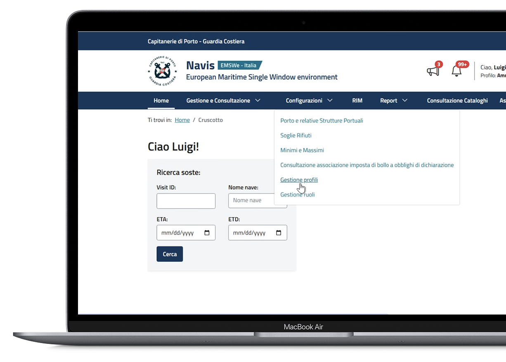
Punto di Accesso alla ricerca e consultazione dei profili
In questa pagina l'utente può effettuare la ricerca per Configurazione Profili e Associazione ruoli a profili.
Ricerca "Configurazione profili"
Selezionare il seguente tab per ricercare i profili presenti nel sistema.
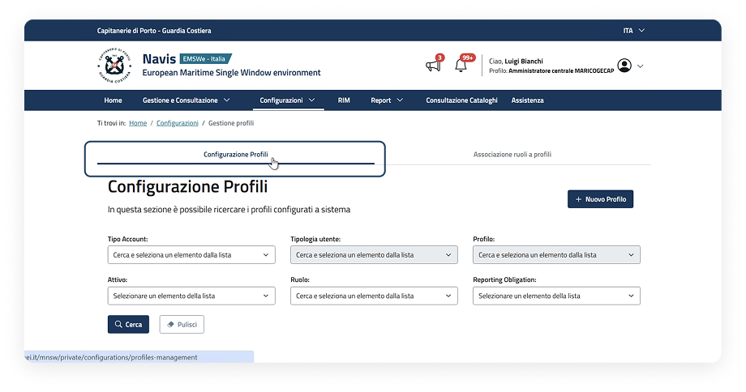
Ricerca "Associazione ruoli a profili"
Selezionare il seguente tab per ricercare i ruoli associati ai profili.
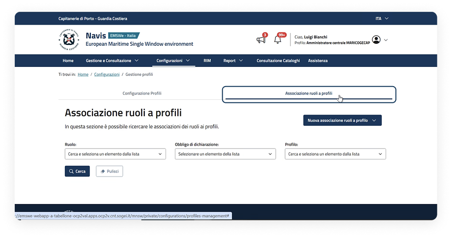
Configurazione profili
È possibile avviare subito la ricerca oppure aggiungere dei parametri per rendere i risultati più precisi. La schermata è suddivisa nelle seguenti tre sezioni:
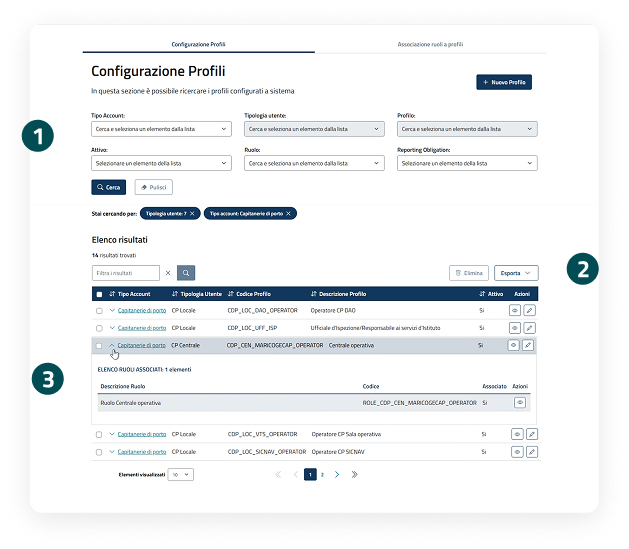
Sezione filtri
La sezione filtri permette di ricercare per Tipo Account, Attivo, Ruolo, Obblighi di Dichiarazione. Tipologia utente e Profilo saranno attivati e opportunamente pre-filtrati in relazione a quanto selezionato nel campo Tipo Account. Avviare la ricerca attraverso il pulsante "Cerca" e pulire i filtri tramite il pulsante "Pulisci". I filtri applicati sono visualizzati e cancellabili.
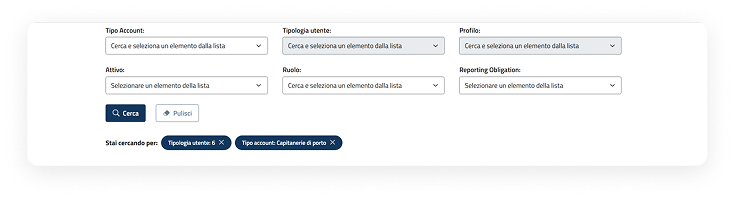
Azioni sulla tabella
È possibile esportare i risultati di ricerca attraverso il pulsante "Esporta" e, dopo aver selezionato uno o più profili, è possibile eliminare tramite il pulsante "Elimina". È possibile filtrare ulteriormente i risultati di ricerca valorizzando il relativo campo.
Visualizzazione componenti tramite tabella
I risultati della ricerca vengono presentati in una tabella, mostrando le informazioni principali e le azioni disponibili: visualizzazione e modifica del profilo. L'elenco dei ruoli associati è visualizzabile tramite apertura ad accordion.
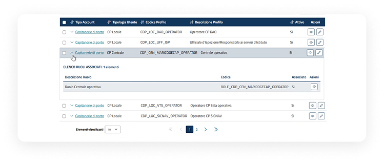
Visualizzazione dettaglio Profilo
All'interno della pagina sono consultabili le seguenti informazioni:
- Tipo Account;
- Tipologia Utente;
- Codice Profilo;
- Descrizione Profilo;
- Ruoli Associati
- Elenco Obblighi di Dichiarazione (se presenti);
- Elenco componenti tecniche.
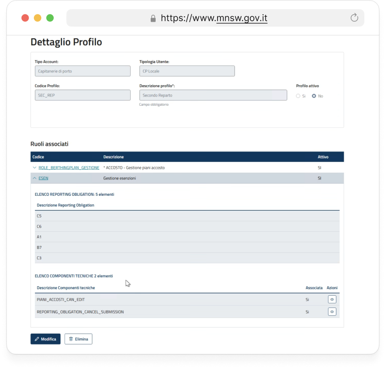
Possibili azioni primarie
"Modifica" per aggiornare il profilo o "Elimina" per cancellarlo.
Possibili azioni sulle componenti tecniche associate
Visualizzazione del dettaglio tramite icona dell'occhio.
Associazione ruoli a profili
È possibile avviare subito la ricerca oppure aggiungere dei parametri per rendere i risultati più precisi. La schermata è suddivisa nelle seguenti tre sezioni:
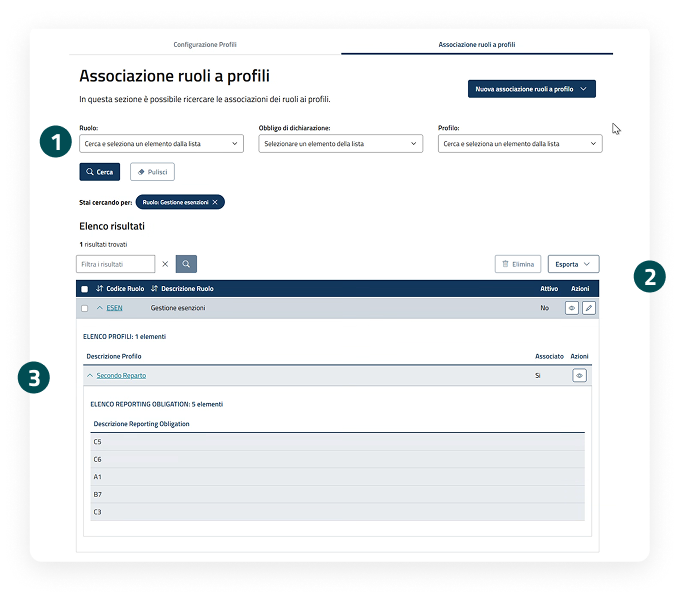
Sezione filtri
La sezione filtri permette di ricercare per Ruolo, Obblighi di Dichiarazione e Profilo. Avviare la ricerca attraverso il pulsante "Cerca" e pulire i filtri tramite il pulsante "Pulisci". I filtri applicati sono visualizzati e cancellabili.
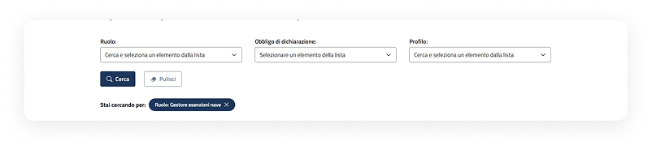
Azioni sulla tabella
È possibile esportare i risultati di ricerca attraverso il pulsante "Esporta" e, dopo aver selezionato uno o più ruoli, è possibile eliminare tramite il pulsante "Elimina". È possibile filtrare ulteriormente i risultati di ricerca valorizzando il relativo campo.
Visualizzazione componenti tramite tabella
I risultati della ricerca vengono presentati in una tabella, mostrando le informazioni principali e le azioni disponibili: visualizzazione e modifica del ruolo. L'elenco dei profili associati è visualizzabile tramite apertura ad accordion.
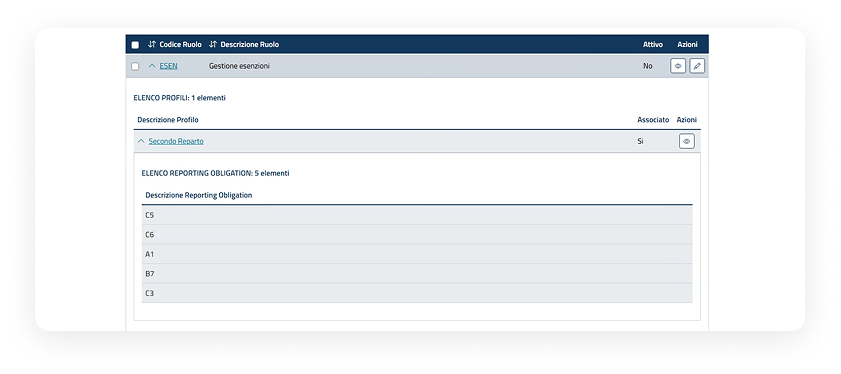
Visualizzazione dettaglio Associazione Ruoli a Profili
All'interno della pagina sono consultabili le seguenti informazioni:
- Codice ruolo;
- Descrizione ruolo;
- Elenco profili associati al ruolo
- Elenco Obblighi di Dichiarazione (se presenti).
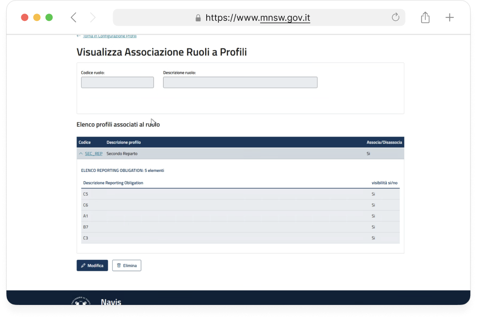
Possibili azioni primarie
"Modifica" per aggiornare l'associazione o "Elimina" per cancellarla.